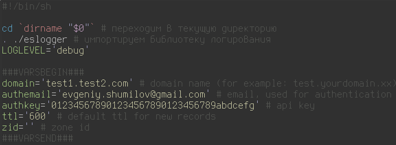
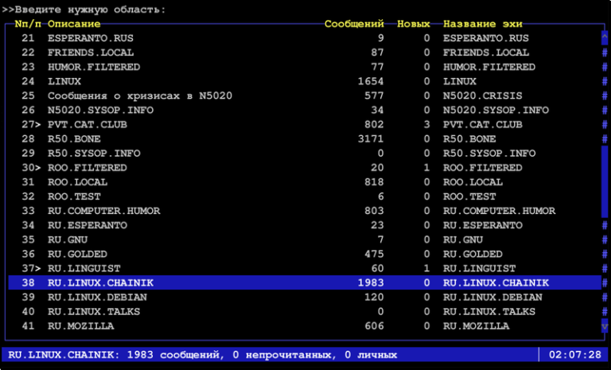

О традиционных свадьбах

В последние лет 10 довольно часто замечаю, что многие пары разводятся спустя год после свадьбы. Зачастую разводятся нехорошо, со скандалами и прочими спецэффектами. Недавно обсуждали в контакте эту ситуацию с одной знакомой. Ниже приведу то, что собрал в кучку из своих мыслей и реплик.
Самая дебильная стратегия - два молодых организма знакомятся, общаются (со временем всё теснее), не предохраняются, через месяц срочно женятся, при этом на свадьбу берут огромные кредиты, то ли от большого ума, то ли под давлением мамашек - "шобы как у всех было и не хуже, чем у Лариски с третьего подъезда!".
Теги: мысли-вслух, жизненное, идиоты
Упороборос или самоперезаписываемые значения в shell скриптах

Периодически, когда мне нужно написать какой-то скрипт на шелле, я сталкиваюсь с типовыми задачами, которые можно решить быстро, просто и в лоб, а можно написать некоторое количество кода, что займёт больше времени, но при этом позволит использовать эту наработку в будущем. Одним словом, на шелле с этим всё обстоит точно так же, как и в других языках. Хотя наверное сочетание слов "библиотека на шелле" звучит достаточно дико и непривычно. Когда -то я уже писал о библиотеке логирования на шелле, которую я сделал много лет назад и достаточно часто ей пользуюсь, с тех пор не было нужды что-то в ней менять.
Вчера я столкнулся с задачей, для которой целая библиотека на гитхабе - это явный перебор, но метод, который можно включать в различные скрипты мне бы совсем не помешал. И вот чем прекрасен собственный блог - это самое подходящее место для того, чтобы оставить заметочку с небольшим куском кода, который потом при необходимости оттуда можно быстро скопировать. Как это нередко бывает при попытке написать что-то на шелле, сам код оказался куда проще, компактнее и универсальнее, чем изначально казалось, должен был быть.
Теги: shell
Установка Micropython на esp8266 и утилита mpfshell

Я давно и прочно люблю Python. Это уникальный язык, позволяющий говнокодить заниматься прототипированием с очень высокой скоростью и уровнем комфорта. Мне нравится его синтаксис, его простота, его универсальность и гибкость. Так же мне интересны микроконтроллеры, поэтому за проектом под названием MicroPython я слежу уже давно. Вообще, создание реализации интерпретатора Python3, пусть даже и в очень обрезанном виде для микроконтроллеров - это нечто на мой взгляд удивительное. Но куда полезнее от восторгов перейти к практике. Заодно расскажу про одну интересную утилиту, которая существенно облегчает жизнь.
Теги: esp8266, micropython
Установка порта Heroes of Might and Magic 3 на linux Mint

Жена давно хотела поиграть в Heroes of Migth and Magic III (далее HOMM3), так как играла в это много лет назад и третьи герои вызывают её ностальгические чувства. Я знаю, что есть порт под linux, но на retropie мне его собрать так и не удалось - были проблемы с зависимостями и версиями библиотек, лишь впустую потратил несколько часов времени. Но не так давно я поставил под телевизор новый китайский неттоп и накатил на него последний минт, как раз для того, чтобы не было проблем со всякой мультимедией, так как в отличие от дебиана, построенного из минимального chroot, там множество вещей работает из коробки. Да и не за чем мучать любимого человека, тайловый i3 и консоль ей не нужны.
Оказалось, что VCMI уже есть в репозитории и его даже не нужно собирать, нужно лишь настроить. Я перепробовал несколько разных сборок и образов HOMM3, (есть купленная копия в GOG, но она английская, а хотелось русскую версию), поэтому сразу расскажу о рабочем варианте с руссификацией и работой в нативных разрешениях экрана.
Теги: linux, games, ностальгия
Вдогонку про качество
 Прошло чуть менее двух недель с того момента, когда у меня было зарегистрировано резкое повышение температуры нижней чакры в отношении качества и надёжности продукции Apple. Не могу сказать, что с тех пор утекло много воды, но за это время на маке одного из наших разработчиков батарея превратилась в подушку и выгнула алюминиевую нижнюю крышку корпуса. Да, я понимаю, это старая добрая традиция в отношении макбуков про, но этот был выпущен в середине 2014-го года, то есть, прошло около 4-х лет. Мы не стали дожидаться, пока батарея выдавит тачпад наружу и отрутили бОльшую часть болтов на нижней крышке, остальные просто ослабив. Самое замечательное, что когда-то разъём зарядки в макбуках (mac safe) изменился. Какой в этом был таинственный глубокий смысл - я решительно не понимаю! В итоге, для новых зарядных устройств есть разъём-адаптер для старых макбуков, который стОит чуть менее 900 рублей (при этом за 1100 рублей на али можно купить целое зарядное устройство для макбука, правда на 60 ватт, но всё-же). Оригинальное зарядное устройство для макбука в каком-нибудь свзяном, стоит около 5,5 тысяч рублей. Блок питания для какого-нибудь ноутбука самсунг на 90 ватт там же стоит до тысячи рублей. Мне вот интересно, зарядное устройство Apple какие-то другие, особые вольты и амперы выдаёт? Из него выходит особый, премиальный ток? Или неодимовый магнит в разъёме добывается вручную лесными эльфами?
Прошло чуть менее двух недель с того момента, когда у меня было зарегистрировано резкое повышение температуры нижней чакры в отношении качества и надёжности продукции Apple. Не могу сказать, что с тех пор утекло много воды, но за это время на маке одного из наших разработчиков батарея превратилась в подушку и выгнула алюминиевую нижнюю крышку корпуса. Да, я понимаю, это старая добрая традиция в отношении макбуков про, но этот был выпущен в середине 2014-го года, то есть, прошло около 4-х лет. Мы не стали дожидаться, пока батарея выдавит тачпад наружу и отрутили бОльшую часть болтов на нижней крышке, остальные просто ослабив. Самое замечательное, что когда-то разъём зарядки в макбуках (mac safe) изменился. Какой в этом был таинственный глубокий смысл - я решительно не понимаю! В итоге, для новых зарядных устройств есть разъём-адаптер для старых макбуков, который стОит чуть менее 900 рублей (при этом за 1100 рублей на али можно купить целое зарядное устройство для макбука, правда на 60 ватт, но всё-же). Оригинальное зарядное устройство для макбука в каком-нибудь свзяном, стоит около 5,5 тысяч рублей. Блок питания для какого-нибудь ноутбука самсунг на 90 ватт там же стоит до тысячи рублей. Мне вот интересно, зарядное устройство Apple какие-то другие, особые вольты и амперы выдаёт? Из него выходит особый, премиальный ток? Или неодимовый магнит в разъёме добывается вручную лесными эльфами?
Теги: mac
Веб-сервер одним файлом на шелле в 24 килобайта с шахматами и поэтессами

Когда я начинал вести этот блог, у меня было стойкое ощущение, что писать мне будет не о чем, но снова и снова я нахожу какие-то интересные вещи, которыми хотелось бы поделиться. Иногда я нахожу их заброшенными, достаю из бекапов, причёсываю, привожу в более-менее нормальный вид, исправляю какие-то ошибки, пишу документацию, выкладываю на github. Вот так и сейчас. Для тестирования блога мне периодически нужен вебсервер. Вебсервер, который должен выполнять только одну функцию - отдавать браузеру HTML. Можно конечно открыть файл самим браузером из файловой системы, но тогда ломаются ссылки на графику и локальные ресуры вида /images/imagename.png. В качестве вебсервера я обычно запускал python c соответствующим модулем: python -m SimpleHTTPServer. В принципе, этого хватает, но дёргать за хвост целый интерпретатор пайтона ради отдачи HTML - это какой-то overkill. Тогда я и вспомнил, что когда-то написал веб-сервер на шелле. Кто сказал, что нельзя написать веб-сервер на шелле?
Теги: shell, web, minimalism
Воспоминания о фидо или "меня зовут 2:/5054:74.20"

Если оглянуться назад и попытаться ответить на вопрос, по какому периоду своей жизни я тоскую больше всего и в какой период прошлого я хотел бы отправиться на денёк-другой в гости, то наверное это будет примерно второй-третий курс университета. Почему именно туда? Множество новых знакомых, первая работа, первые отношения, погружение в программирование и linux, появление первых телефонов, корявые ява-приложения, подключение витухи на 64к, посиделки с друзьями, дни рождения, записи песен, дача, сборка сервера внутри дивана, и отдельным пунктом - фидо. Фидо - это удивительное явление. Если бы не было фидо, на интернет я бы смотрел совершенно другими глазами. Сейчас интернет через призму моего восприятия представляет из себя огромную такую помойку, долину мусорных куч, среди которых где-то на горизонте высятся небоскрёбы больших корпораций - гугла, яндекса, IBM, огромные грязные мегалиты коммуналок "Вконтакте" и Facebook, обветшалый LiveJournal, с доброй половиной заколоченных окон, дом престарелых "Одноклассники"... И в тени этих живых и доживающих огромных и не очень зданий, копаются в мусорных кучах бобики. Огромное количество бобиков в бессчётном количестве куч. Кто-то радостно похрюкивая кушает какашки, кто-то эти какашки воспроизводит в комментариях, кто-то пытается найти ценную и косточку той или иной степени свежести. У кого нюх получше - те находят то, что искали, остальные плещутся в отходах, обмазанные рекламой казино, курсов игры на форексе и предложением купить настоящий айфон за полцены.
Теги: fido, ностальгия
В ротейт мне логи! Про минимализм, busybox и логирование.
Так как я довольно много пишу на шелле, передо мной уже довольно давно встала проблема логирования в скриптах. После просмотра километровых логов начинает рябить в глазах, сложно выделить важные моменты при быстром скроллинге, например, какой-нибудь warning или внезапный error. Одним словом, терпение закончилось и я решил написать свой велосипед, по возможности функциональный, лёгкий и с минимумом зависимостей - всё, как я люблю. 
Традиционный список хотелок:
- Минимальные зависимостии размер
- Уровни логирования (debug/info/warinig)
- Отключаемая подсветка разными цветами разных типов событий
- Работоспособность под OpenWRT, Android, Alpine и т.п.
- Возможность переопределять параметры переменными в основном скрипте
- Возможность передать в FATAL сразу код завершения
- Настраиваемый формат даты
- Разделитель (очень полезно для отделения частей лога)
- Краткий синтаксис вызова (не люблю длинные имена модулей)
Теги: logging, shell, busybox, minimalism
Выпуск подкаста с моим участием по теме троичной логики и троичных компьютеров

Пару недель назад я принял участие в подкасте "Опытные на кухне". Я просто оставлю тут ссылку на выпуск.
Вызов метода класса по имени в python

Недавно столкнулся с одной простой задачей, с которой раньше cталкиваться не приходилось, поэтому оставлю себе здесь запись в качестве памятки. В MicroPython необходимо было для одного класса написать встроенный менеджер задач - некий аналог cron и таймера, который бы позволил микроконтроллеру в общем цикле вызывать методы этого же класса (например, проверка состояния GPIO, датчиков, подключения к WiFi, MQTT и т.п.) по расписанию или через заданное количество времени после наступления какого-либо события. В числе прочего планировалась возможность фильтровать задачи по имени для динамической расстановки их приоритетов и я счёл, что лучшим вариантом в этом случае будет хранение в структуре данных имени метода, затем, возможно, создание словаря, ключами которого будут имена методов. Заодно и имя метода в виде строки куда проще передавать в другой метод в качестве параметра плюс аттрибуты отдельным кортежем во втором параметре. Использовать для обратного преобразования (да и для практически любых других задач) eval - мягко говоря, дурной тон, поэтому пришлось мучать гугл. Решение оказалось не простым, а очень простым. Я уже устал удивляться подобному при программировании на python, но всё ещё продолжаю это делать.
Теги: python